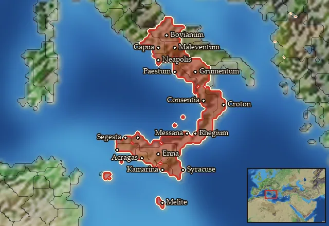

Mercenary Campanian Cavalry


Mercenary. Hired from a regional pool, not recruited from a building.
Class: heavy · Category: cavalry · Men per unit: 30
Description
"Also from Italy they hired Campanians and brought them over to Libya; for they knew that their aid would be of great assistance to them." – Diodorus Siculus (Bibliotheca Historica 13.80.4)
The Campanian Cavalry is recruited from the wealthy equestrian nobility of Campania and its prosperous cities. Renowned across the Mediterranean for their horsemanship and skill in battle, these noble riders are one of the finest mounted forces in Italy, being second to none. They fight without shields, which allows to carry bundles of javelins into battle. In melee, they fight with spears, but they also carry curved slashing swords (kopides or machairai) which hang suspended from the hip. These men ride into battle protected by bronze muscle cuirasses, Italic triple-disc cuirasses, and composite linen corselets (linothorakes) with leather pteryges and beautifully decorated patterns, worn over short colourful tunics. Bronze greaves, as well as crested Attic or Samno-Attic helmets adorned with plumes and feathers complete their equipment. Fast, brave, and lethal at medium range, these heroes of Campania excel at pelting formations with javelins before charging into their disordered ranks to claim their enemy's weapons as trophies of valour upon their victorious return!
Historical background
Campania, centred around the fertile plain of Capua and bordered by the Tyrrhenian Sea and the Apennine mountains, was already praised for its agricultural and commercial wealth in antiquity. As Polybius records: “The plain around Capua is the most celebrated in all Italy, both for its fertility and beauty, and because it is served by those sea-ports at which voyagers to Italy from nearly all parts of the world land. It also contains the most celebrated and finest cities in Italy” (Polyb. 3.91). Originally inhabited by Oscan-speaking populations, Campania was colonised by the Etruscans, who founded Capua around 600 BC. The region was subsequently conquered by the Samnites in the late 5th century BC, who seized Capua in 424 BC and Cumae in 420 BC, while entering into a shared Greco-Oscan ruling arrangement at Neapolis (Liv. 4.37.1–2, 4.44.12; Burns, The Cultural and Military Significance (2005), pp. 18–20; Fronda, Between Rome and Carthage (2010), pp. 121, 139). By the 4th century BC, Livy described Capua as the largest and richest city in Italy (‘urbs maxima opulentissimaque Italiae’: Liv. 7.31.1), which dominated satellite towns such as Atella, Calatia, and Casilinum (Fronda (2010), pp. 1215–1222).
The wealth of its rich countryside, with a fertile volcanic soil, mild climate, and flat pastures, created ideal conditions for horse-breeding. The Campanians put this to good use by raising strong, agile horses, which earned them a reputation as formidable horsemen across the Mediterranean (Tan, 'The dilectus-tributum system’, in: Armstrong and Fronda (eds.), Romans at War (2020), p. 69; Burns, ‘Visible Proofs of Valour’, in: Papers from the Institute of Archaeology 14 (2003), pp. 50–51). Campanian mercenaries, whether or not from Capua itself, were held in the highest regard by the Sicilians (Diod. Sic. 13.80). It is nonetheless clear that the tradition associated Capua’s military capacity with its cavalry rather than its infantry (Tan (2020), p. 69). In 411 BC, Carthage hired 800 Campanian horsemen originally recruited for the Athenian expedition to Syracuse (Diod. Sic. 13.44), re-hiring additional contingents in 406 BC specifically to prevent them from aiding the Sicilian Greeks (Diod. Sic. 13.80.4; Burns (2003), p. 50). Shortly thereafter, 1,200 Campanian cavalrymen rode to Syracuse to rescue the tyrant Dionysius I (Diod. Sic. 14.9.2).
The martial ethos of Campania’s horse-riding aristocracy is well preserved in 4th-century BC painted chamber tombs from Capua and Nola (Burns (2003), pp. 42–44, 49–50). These frescoes depict mounted nobles returning from battle carrying bloodstained tunics, bronze belts, and shields stripped from slain foes suspended from their javelins and spears, or draped as trophies around their horses' necks. Regarding this iconographical motif, Martin Frederiksen remarked that "nothing was more revealing about the ethos of the Campanian warrior society" (Frederiksen (1968), p. 5, quoted in Burns (2003), pp. 43–44).
Following Rome's intervention in Campania in 343 BC and the Latin Settlement of 338 BC, Capua was incorporated with civitas sine suffragio (citizenship without the vote), and its horsemen became a regular and important part of Roman armies (Liv. 7.31, 8.14.11; Tan (2020), pp. 68–69; Armstrong, 'Organized chaos', in: Armstrong and Fronda (eds.), Romans at War (2020), p. 93). Indeed, Burns notes that “Livy, who rarely gives credit to non-Roman troops, states that during the battle of Sentinum in 295 BC, it was a flanking manoeuvre by 500 Campanian cavalry which finally broke the Gallic and Samnite battle line and secured a victory for the Romans” (Liv. 10.29.12; Burns (2003), p. 50). Even at the outbreak of the Second Punic War, Rome sent 300 Campanian horsemen drawn from Capua's noblest families to garrison Sicily (Liv. 23.4.7–8; Armstrong (2020), p. 93).
After Capua defected to Hannibal in 216 BC, Livy notes that during the Roman siege of the city, the Campanian cavalry “generally had the advantage, but their infantry got the worst of it” (Liv. 26.4.4). To counter their superiority, Roman commanders selected “young men of exceptional speed and agility,” supplied them with shields and “seven javelins, four feet long and tipped with iron heads similar to those on the darts of the velites”, and trained them to ride double behind Roman horsemen before leaping down to shower the Campanians with missiles. Livy credits this success for stimulating the official incorporation of the velites into the Roman legions (Liv. 26.4.4–9). Although light skirmishers had long operated in Roman armies, this episode goes to show how great the Campanian cavalrymen were in battle, forcing the Romans to adapt their fighting tactics to beat them. Furthermore, their capability as skirmishers is visually corroborated by the famous Return of the Warrior tomb painting from Capua, which depicts a returning cavalryman carrying two spears, at least one of which may have served as a throwing javelin (Dench, From Barbarians to New Men (1995), pp. 65–66; Burns (2003), pp. 43–44). One thing is certain from all these accounts: a long and proud military tradition united the Campanian Cavalry, and thanks to their supreme skill in all sorts of mounted combat, these warriors were a serious threat to anyone who dared to oppose them.
Stats
| Rank in roster | ||
|---|---|---|
| Men per unit | 30 | █········· 8% |
| Attack | 12 | █████····· 47% |
| Charge bonus | 30 | █████████· 89% |
| Defence | 30 | ████······ 43% |
| · armour | 10 | █████····· 54% |
| · defence skill | 20 | █████····· 47% |
| · shield | 0 | █········· 0% |
| Morale | 14 | ████████·· 79% |
| Discipline | Normal | |
| Training | Highly trained | |
| Upkeep per turn | 1,080 dn | █████████· 92% |
Weapons
Its secondary attack is the stronger one: 14 against 12.
| Primary | Secondary | Primary | Secondary | Primary | Secondary | Primary | Secondary | ||||
|---|---|---|---|---|---|---|---|---|---|---|---|
| Attack | 12 | 14 | Type | thrown · archery | melee · blade | Projectile | javelin | — | Ammunition | 7 | — |
| Charge bonus | 30 | 30 | Damage | piercing | piercing | Range | 60 | — | Properties | Thrown | — |
Defence
| Primary | Secondary | Primary | Secondary | Primary | Secondary | Primary | Secondary | ||||
|---|---|---|---|---|---|---|---|---|---|---|---|
| Total | 30 | — | Armour | 10 | — | Defence skill | 20 | — | Shield | 0 | — |
Condition and terrain
| Hit points | 1 | Ground: scrub / sand / forest / snow | -3 / -1 / -8 / -1 | Charge distance | 40 | Formations | Square · Wedge |
| Mount | medium horse |
Technical stats
| Time between blows (primary / secondary) | 2.5 s / 2.5 s | Extra fatigue in hot climates | 2 | Spacing between men: close / loose | 2.2 × 5.2 m / 3.3 × 7.8 m | Default ranks | 5 |
In battle: Can form Cantabrian circle · Very good stamina · Powerful charge
Where to hire it
Mercenaries are hired from a regional pool, not recruited from a building. This unit is offered by 2 pools covering 18 regions, at 3,980 dn to hire and 1 experience.
Mercenary pools: Sicily · Southwest Italy

At least one of those pools sells to any faction that has an army in range, with no faction restriction.